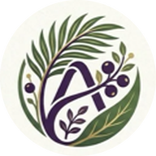
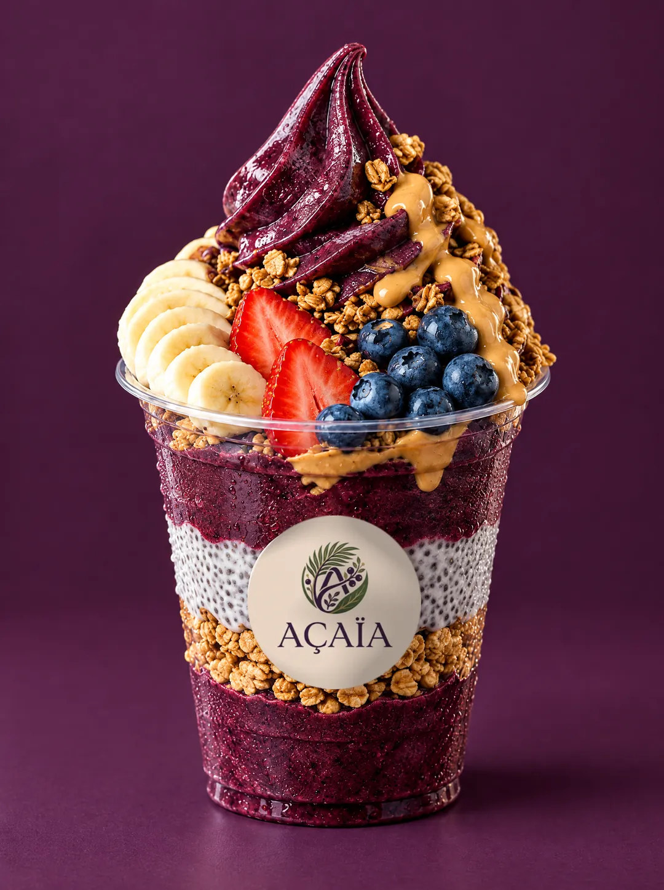

Kokoa oma açaí
| Valinta | S | L |
|---|---|---|
| 3 täytettä | 10,90 € | 12,90 € |
| 5 täytettä | 12,90 € | 14,90 € |
| Lisätäyte | 1 € | |

AÇAÏA Auki joka päivä ReittiohjeetAÇAÏA Smoothie bowl Helsinki
AÇAÏAn kulhot ovat smoothie bowleja, joiden pohja on paksua, jäistä açaí-sosetta. Kokoa oma 3 tai 5 täytteellä 10,90 € alkaen tai valitse valmis Special.

Smoothie bowl Helsinki
Smoothie bowl on lusikalla syötävä kulho paksua smoothieta, jonka päälle tulee täytteitä. Açaí bowl on smoothie bowl, jonka pohja tehdään pakastetusta açaí-soseesta. AÇAÏAssa jokaisen kulhon pohja on açaíta.
Pohja on niin paksu, että täytteet pysyvät päällä. Siksi kulho syödään lusikalla eikä juoda pillillä.
Mansikka, mustikka, banaani, mango, kiivi, granola tai chia-vanukas. Päälle maapähkinävoi, pistaasikastike, Lotus Biscoff tai Nutella.
Pistachio Dream ja Lotus Biscoff ovat valmiita Special-kulhoja, molemmat 14,90 €.
Näin löydät meille
Ma–to 7–22, pe 7–24, la 10–24, su 10–22. Reittiohjeet aukeavat Google Mapsiin yhdellä napautuksella.
AÇAÏA on açaí-kahvila Helsingin Punavuoressa osoitteessa Perämiehenkatu 5, 00150 Helsinki. Kaikki kulhot ovat açaí-pohjaisia smoothie bowleja. Kahvila on auki ma–to 7–22, pe 7–24, la 10–24, su 10–22.
Melkein. Smoothie bowl on yleisnimi paksulle, lusikalla syötävälle smoothiekulholle. Açaí bowl on smoothie bowl, jonka pohja on açaí-sosetta.
Oma kulho maksaa 10,90 € (S, 3 täytettä), 12,90 € (L, 3 täytettä tai S, 5 täytettä) tai 14,90 € (L, 5 täytettä). Lisätäyte on 1,00 €.